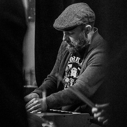

About Me
I write code. I write music. I write words sometimes, though not well. I play guitar. I play piano. I play with code. I play golf. I play hockey because I live in Minnesota and it's one of the few things that makes winter bearable here. I play guitar in a band named The Federales. I also play keys in a jazz quartet named Mr 500. I love jazz. I love coding. I love building things, especially software. I love food. My wife loves food even more than I do and it shows in her cooking. I love her. I love her cooking. I love cats, espcially my kitten named Townes (after Townes Van Zandt).
That's enough about me, tell me about yourself.